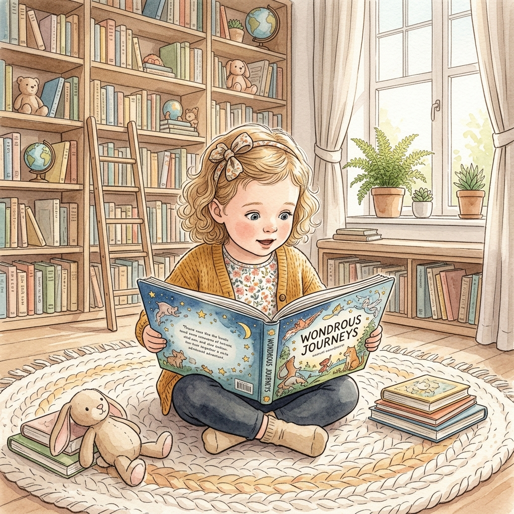
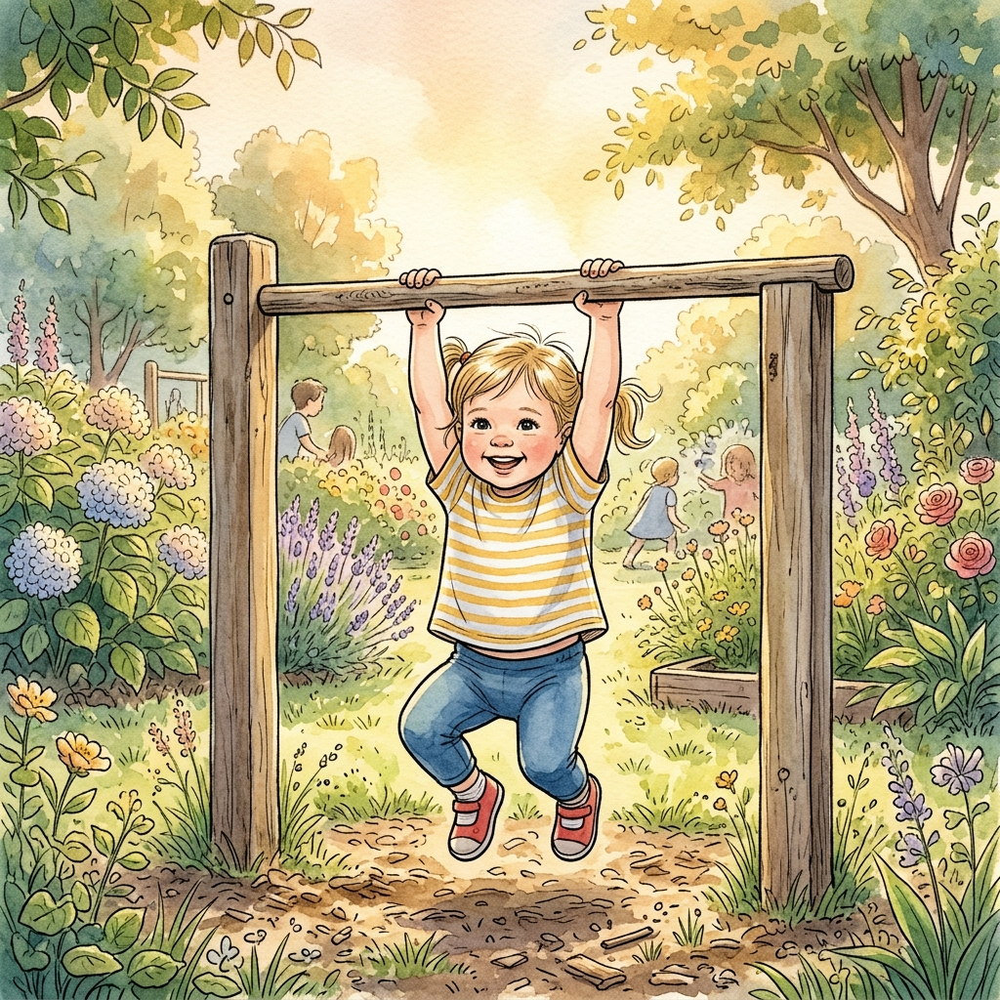
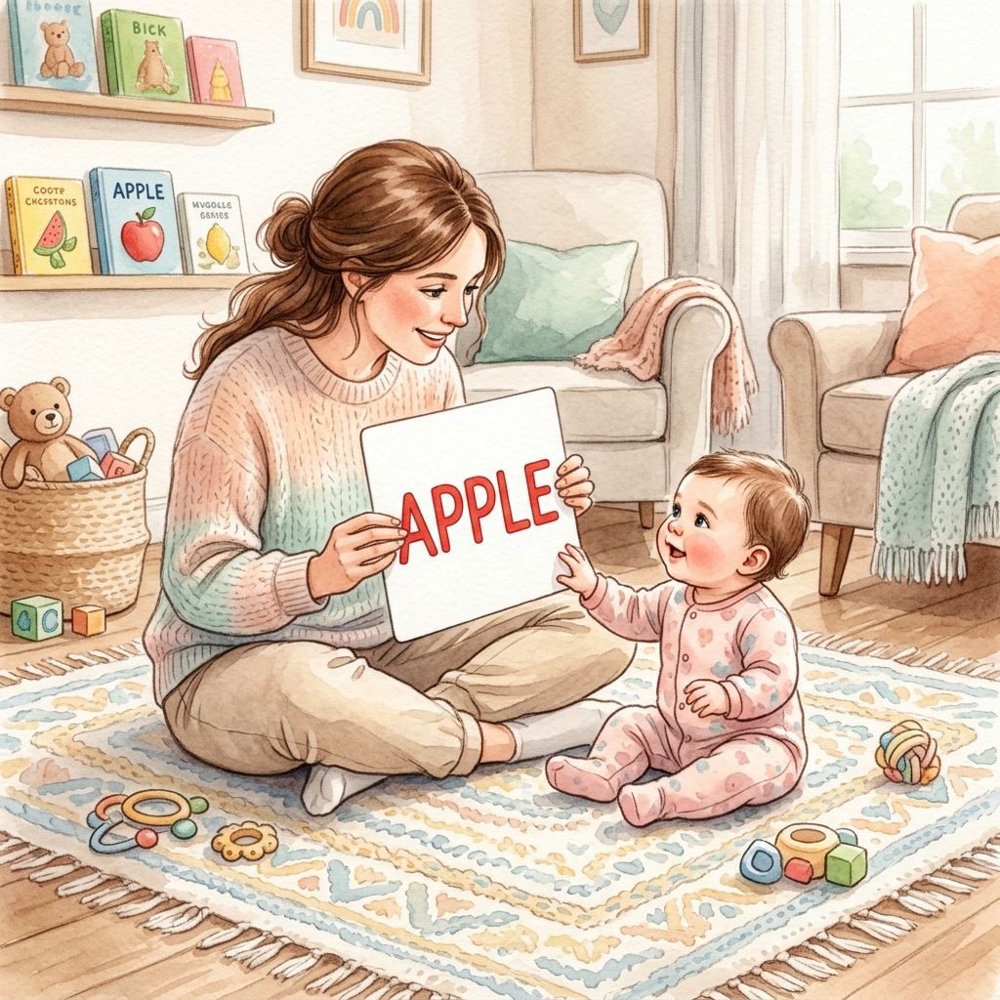
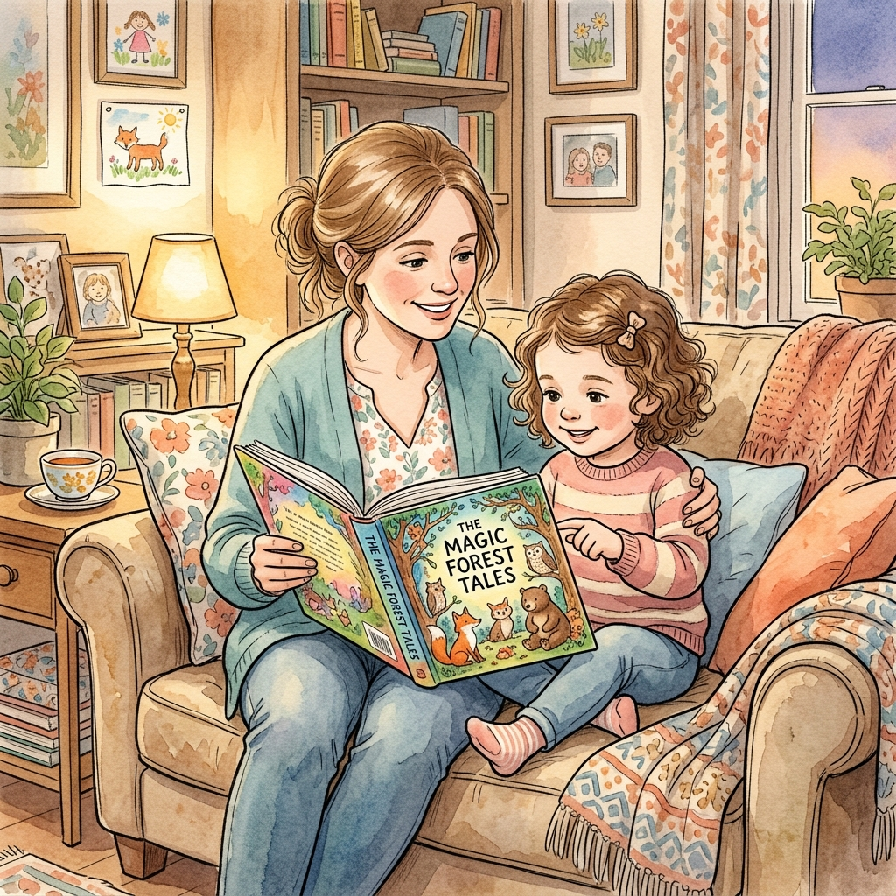

Giáo sư Shichida Makoto — Chương IV: Giáo Dục Tư Duy Cơ Bản

Thời gian đọc ước tính: ~25 phút (6,100 từ) |
Độ khó: Khá cao (Đòi hỏi sự nhẫn nại rèn luyện thói quen hàng ngày của cha mẹ)
Khái niệm cốt lõi: Hệ tín hiệu thứ hai · Trực quan từ vựng (Glenn Doman) · Thực nghiệm Steinberg (Hawaii) · Quy trình 5 bước đọc chữ · Bao Myelin thần kinh (Luật 3 tháng) · Thùy trước trán & Trò chơi đố vui · 20 Nguyên tắc vàng nuôi dạy từ 0 tuổi

Tóm tắt một câu: Giáo dục ngôn ngữ là nền tảng cốt lõi của giáo dục sớm, kích hoạt hệ tín hiệu thứ hai giúp định hình cấu trúc não bộ và khai mở khả năng tư duy trừu tượng sâu sắc cho trẻ trước 6 tuổi. Ch 4, p. 70, 74
Bối cảnh đặt ra (The Setup): Trào lưu giáo dục anh tài tại Nhật Bản tập trung lệch lạc vào các bài tập suy luận và trò chơi trí năng (IQ), trong khi bỏ quên giáo dục ngôn ngữ - con đường duy nhất để xây dựng tư duy tinh thần sâu sắc và tình cảm lành mạnh. Ch 4, p. 74
Luận điểm cốt lõi (The Argument): "Chức năng quyết định cấu tạo". Việc dạy chữ sớm cho trẻ từ sơ sinh (khi tính mềm dẻo của não bộ cao nhất) không chỉ mở rộng vốn từ mà còn trực tiếp tái cấu trúc các liên kết thần kinh (đường phản hồi thị giác), kích hoạt thùy trước trán phát triển vượt bậc. Ch 4, p. 70, 71
Bằng chứng & Minh họa (The Evidence): Thí nghiệm trị liệu trẻ tổn thương não của Glenn Doman, thực nghiệm dạy đọc chữ từ sơ sinh cho con trai K của GS. Steinberg (K đạt trình độ đọc lớp 12 lúc 10 tuổi), nghiên cứu dạy chữ trẻ Down của Belas, và 20 nguyên tắc vàng được đúc rút từ phương pháp Karl Witte và Goethe. Ch 4, p. 70, 71-73, 79
Hệ quả thực tế (The Implications): Cha mẹ cần dạy đọc chữ sớm bằng thẻ từ (flashcard) kết hợp trải nghiệm thực tế; rèn luyện thùy trước trán qua trò đố vui và đu sà ngang; thực hiện nguyên tắc "3 Không" (không dọa, không cấm, không phủ nhận) và kiên trì lặp lại ít nhất 3 tháng để bao myelin thần kinh hoàn thiện phản xạ. Ch 4, p. 73, 77-79
Điểm gây tranh luận (The Controversy): Một số luận điểm y học của tác giả đã lỗi thời như: cảnh báo tivi 220V phóng tia âm cực gây máu trắng, hoặc lý thuyết của Doman về việc "dạy chữ làm hộp sọ nở to gấp 3-4 lần" vốn không có cơ sở nhi khoa hiện đại. Tuy nhiên, khuyến cáo hạn chế màn hình và lợi ích của tương tác ngôn ngữ trực tiếp vẫn hoàn toàn chính xác. Ch 4, p. 70, 78
Mối liên hệ hệ thống (The Connection): Chương này đúc kết toàn bộ phương pháp kích ứng của ba chương trước (Chương I: Tình yêu, Chương II: Giác quan/Vận động, Chương III: Lễ nghĩa/Ý chí) thành một cẩm nang hành động thực tiễn toàn diện nhất, chỉ ra các công cụ cụ thể (Sổ từ vựng, Nhật ký đọc, Từ điển) để cha mẹ đồng hành cùng con. Ch 4, p. 80-81

1. Trẻ 2-3 tuổi học nhanh hơn trẻ 6 tuổi: Càng nhỏ tuổi càng hào hứng với chữ; trẻ lớn học chữ thường lười và ngại. Ch 4, p. 73
2. Nói và Biết là khác nhau: Nghe hiểu ý nghĩa là cốt lõi của ngôn ngữ, không cần nói ra tiếng mới là biết (tránh học nói vẹt không hiểu gì). Ch 4, p. 73
3. Đọc khác Viết: Viết cần phát triển cơ ngón tay (thường phải 4-5 tuổi). Đọc chỉ cần thị giác nên có thể dạy từ sơ sinh. Ch 4, p. 73
4. Dạy chữ gắn liền với trải nghiệm: Dạy từ ngữ tương ứng với đồ vật trẻ vừa nhìn thấy hoặc chạm vào. Học từ không có nghĩa rất chán. Ch 4, p. 73
5. Nghe hiểu & Đọc ngay: Khi trẻ đã hiểu nghĩa của từ khi nghe, lập tức cho trẻ tiếp xúc với mặt chữ của từ đó. Ch 4, p. 73
6. Trò chơi ghép cặp: Dạy trẻ chơi trò ghép đồ vật - chữ, tranh - chữ để tạo mối liên kết trực quan bền vững. Ch 4, p. 73-74
7. Tránh ngữ pháp trừu tượng: Không phân tích ngữ pháp, trợ từ. Tập trung dạy từ đơn và các câu văn ngắn hoàn chỉnh để trẻ hấp thụ nguyên mảng. Ch 4, p. 74
8. Chia nhỏ thời gian học: Mỗi cữ học chỉ kéo dài 2-3 phút, tổng cộng 10 phút mỗi ngày. Chia thành nhiều lần chơi game thẻ từ để trẻ không chán. Ch 4, p. 74
Phê phán của Shichida: Trí năng đích thực của trẻ chỉ có được bằng cách đọc sách và tự ngấm. Các bài tập suy luận hay trò chơi IQ suông mà thiếu ngôn ngữ sẽ không thể tạo ra chiều sâu tinh thần. Ch 4, p. 74
Nhiều bậc phụ huynh thực dụng từ chối kể truyện cổ tích vì cho rằng chúng thiếu thực tế và nói dối (cậu bé sinh ra từ quả đào, vãi tro hoa nở). Shichida khẳng định đây là sai lầm nghiêm trọng:
Truyện cổ tích do mẹ kể trực tiếp mang lại hai lợi ích tinh thần to lớn:
Hành vi cần tránh: Dọa dẫm trẻ bằng ông ba bị, quỷ thần hoặc mẹ mìn bắt đi ("không ngoan quỷ nó đến bắt đấy!"). Ch 4, p. 77
Hậu quả tâm lý: Gây vết thương sâu sắc trong lòng trẻ. Trẻ lớn lên nhút nhát, sợ hãi vô cớ, học lớp 3-4 vẫn không dám tự đi toilet một mình. Ch 4, p. 77
Hành vi cần tránh: Vô thức ngăn cấm trẻ khám phá ("Nguy hiểm lắm, cấm dùng kéo!", "không được xé giấy!"). Ch 4, p. 77
Hậu quả tâm lý: Triệt hạ mầm mống tích cực, tò mò của trẻ. Trẻ lên tiểu học thụ động, vụng về, rời mắt cha mẹ là gặp lo lắng. Ch 4, p. 77
Giải pháp: Ngồi bên cạnh giám sát chặt chẽ khi con cắt giấy bằng kéo. Cho con tự trải nghiệm các nguy cơ nhỏ để tự học. Ch 4, p. 77
Hành vi cần tránh: Than vãn, phủ nhận con trước mặt người khác ("Nó chả nghe lời", "con tôi chả chịu ngồi yên"). Ch 4, p. 78
Hậu quả tâm lý: Trẻ nghe thấy sẽ bị tự kỷ ám thị. Trẻ tự động điều chỉnh nhân cách và lớn lên trở thành đứa bé đúng hệt như lời phủ nhận của mẹ. Ch 4, p. 78
Giáo sư Shichida Makoto dẫn chứng các cảnh báo khoa học thời bấy giờ để kịch liệt phản đối việc cho trẻ sơ sinh tiếp xúc với màn hình tivi:
Cách thiết lập: Chuẩn bị một cuốn vở, chia các trang theo thứ tự bảng chữ cái (lề ghi ABC...). Ch 4, p. 80
Cách sử dụng: Hướng dẫn bé ghi chép lại các từ mới học được vào đúng trang chữ cái bắt đầu. Dạy trẻ phân loại từ theo cột: danh từ, động từ, tính từ. Ch 4, p. 80
Mục tiêu: Tích lũy vốn từ khổng lồ, rèn luyện tư duy phân loại khoa học và chính xác. Ch 4, p. 80
Cách thiết lập: Cuốn sổ ghi lại tất cả các tựa sách trẻ đã đọc/nghe đọc từ lúc 2 tuổi. Ch 4, p. 80
Thông số ghi chép: Tên sách, tác giả, ngày đọc, số lượng trang sách và tổng số cuốn đã hoàn thành. Ch 4, p. 80
Mục tiêu: Lưu giữ kỷ lục phát triển quý giá của con. Việc nhìn số trang tăng dần khích lệ mạnh mẽ tinh thần tự hào và động lực đọc sách của trẻ. Ch 4, p. 80-81
Cách thiết lập: Mua từ điển trẻ em có hình ảnh minh họa sinh động và dễ tra cứu. Ch 4, p. 80
Cách sử dụng: Khi trẻ hỏi nghĩa hoặc cách viết một từ (ví dụ: "hanaji" - chảy máu cam), hướng dẫn con tự lật từ điển để tra cứu thay vì trả lời ngay. Ch 4, p. 80
Mô hình bản đồ: Người ngồi trên xe được chở đi sẽ không bao giờ nhớ đường. Người tự đi bộ với bản đồ trong tay sẽ tự biết hỏi đường, xem bản đồ và thuộc đường rất lâu. Ch 4, p. 80
Giáo sư Shichida sử dụng nghệ thuật chơi chữ trong tiếng Nhật (chữ "Te" có nghĩa là Bàn Tay, đồng thời là hậu tố của 4 hành động nuôi dạy) để đúc kết phương châm nuôi dạy trẻ toàn diện trước 1 tuổi:
Sự âu yếm, ôm ấp kề da áp thịt, dập tắt bất an và gieo mầm lòng tin cơ bản cho con. Ch 4, p. 81
Đảm bảo dinh dưỡng và vệ sinh, nhanh chóng giải quyết sự khó chịu của cơ thể trẻ. Ch 4, p. 81
Trò chuyện liên tục, kể chuyện cổ tích hư cấu và đọc sách tranh để xây dựng hệ ngôn ngữ lý tính. Ch 4, p. 81
Động viên nỗ lực của con, nhìn nhận và khích lệ hành động cụ thể để vực dậy tự tin. Ch 4, p. 81
⚠️ Cảnh báo tự kỷ: Trẻ sinh ra khỏe mạnh bình thường nhưng nếu thiếu sự kết nối trực tiếp của "4 bàn tay" này (như bị bỏ mặc xem TV hoặc xa lánh tình cảm) sẽ rất dễ rơi vào trạng thái tự kỷ. Ch 4, p. 81
🤰 Thai giáo tình thương: Thai nhi từ trong bụng mẹ đã thấu hiểu lời nói của cha mẹ. Trẻ được lớn lên trong tình yêu thương tràn đầy từ khi là thai nhi sẽ có tâm hồn và khả năng tiếp thu vượt trội sau sinh. Ch 4, p. 81
Giáo dục ngôn ngữ là nền tảng cốt lõi của giáo dục sớm từ sơ sinh, giúp kích hoạt hệ tín hiệu thứ hai và tái cấu trúc vật lý đại não. Cha mẹ cần áp dụng quy trình dạy đọc 5 bước, thực hiện quy tắc "3 Không" (không dọa, không cấm, không phủ nhận), rèn luyện thùy trước trán (suy nghĩ) song song với vận động thể chất (đu sà ngang), và nuôi dưỡng con bằng "4 bàn tay" để phòng tự kỷ. Ch 4, p. 70, 75, 77, 80-81
Mạch tư duy của Shichida trong chương này có tính thực tiễn cao: giới thiệu cơ sở khoa học thần kinh (Doman, hệ tín hiệu thứ hai) → dẫn chứng thực nghiệm lâm sàng thành công (Hawaii, Hiroshima) → thiết lập quy trình từng bước → đúc kết 20 nguyên tắc vàng → xây dựng các công cụ tự học thực tế (sổ từ vựng, từ điển, sà ngang). Ch 4, p. 70, 72, 75, 80
Tác phẩm được viết trong bối cảnh nước Nhật những năm cuối thế kỷ 20, khi các lớp học "kiểu anh tài" tập trung thái quá vào luyện IQ và suy luận logic khô khan bùng nổ, đồng thời công nghệ tivi gia đình phát triển nhanh chóng gây lo ngại về sức khỏe tâm lý trẻ nhỏ. Ch 4, p. 74, 78
Đúng: Khẳng định tầm quan trọng vượt trội của ngôn ngữ đối với tư duy. Nhấn mạnh việc khen ngợi nỗ lực thay vì tư chất. Khuyên khích tự tra từ điển để học chủ động. Ch 4, p. 74, 78, 80
Sai sót khoa học: Cường điệu quá mức các lý thuyết của Glenn Doman (như việc sọ trẻ nở gấp 3-4 lần). Cảnh báo về tivi phóng tia âm cực gây máu trắng mang tính định kiến thời đại hơn là bằng chứng y khoa hiện đại. Ch 4, p. 70, 78
Kiến tạo mô hình "Tự Học Ngôn Ngữ Chủ Động Kép (Active Bilingual Self-Learning Model)": Sử dụng sổ từ vựng và nhật ký đọc sách kết hợp với công nghệ số hiện đại (tự tra cứu từ điển số an toàn). Thay thế hoàn toàn tivi/màn hình thụ động bằng các tương tác giọng nói hai chiều trực tiếp, kể chuyện cổ tích nhập vai, và các bài tập vận động thăng bằng sà ngang tại nhà để kích hoạt thùy trước trán tối đa mà không gây áp lực học tập tiêu cực cho con. Ch 4, p. 76, 80
"Trụ cột phương pháp giáo dục trẻ nhỏ là việc giáo dục ngôn ngữ. Nếu không, chắc chắn trẻ không đạt được sự sâu sắc về tinh thần. Giả sử có tài liệu giáo trình trí năng, chỉ số IQ đạt tới 180 hay 200 thì không có nghĩa là trẻ đã có khả năng tư duy mang tính tinh thần sâu sắc. Trí năng, chỉ có thể đạt được bằng cách đọc sách và tự ngấm vào mỗi con người trẻ nhỏ mà thôi."
— Giáo sư Shichida Makoto, phê phán các phương pháp giáo dục sớm lệch lạc chỉ tập trung vào luyện IQ suông. Ch 4, p. 74
"Chúng ta hãy cố gắng nuôi dạy trẻ mà không dùng đến các từ phủ nhận, cấm đoán trẻ. Bố mẹ thường hay nói một cách vô thức với con 'Nguy hiểm lắm, cấm dùng kéo' hay 'không được xé giấy'... Cách nói đó là cách cấu ngắt đi những cái mầm tích cực của trẻ."
— Giáo sư Shichida Makoto, cảnh báo về thói quen cấm đoán vô thức của cha mẹ hủy hoại tính chủ động của trẻ. Ch 4, p. 77
